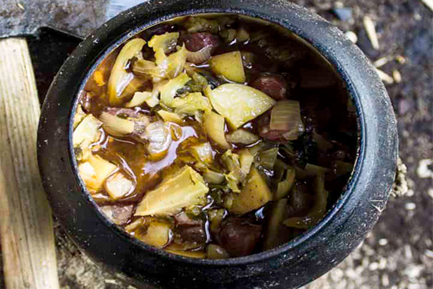

Crockpot stew
A strong warrior requires a full belly to fight efficently. This crock pot stew will surely improve your axe throwing skills.
Ingredients
4 servings
- 4 onions
- 8 cloves of garlic
- 4 large potatoes
- 900g(2lb) beef or venison
- 450g(1lb) bacon
- 1 cabbage
- 1000ml(4.22 cups) beer
- 1000ml(4.22 cups) meat or vegetable stock
Directions
- Place all the ingredients together into the pot and mix it well.
- Cook it at low medium temperature for about 5 hours monitoring it every now and again adding water or stock if needed.
- Season with salt and pepper when done.
- OPTIONAL: You can also chop up some herbs(parsley, marjoram, dill)and add it in when done.